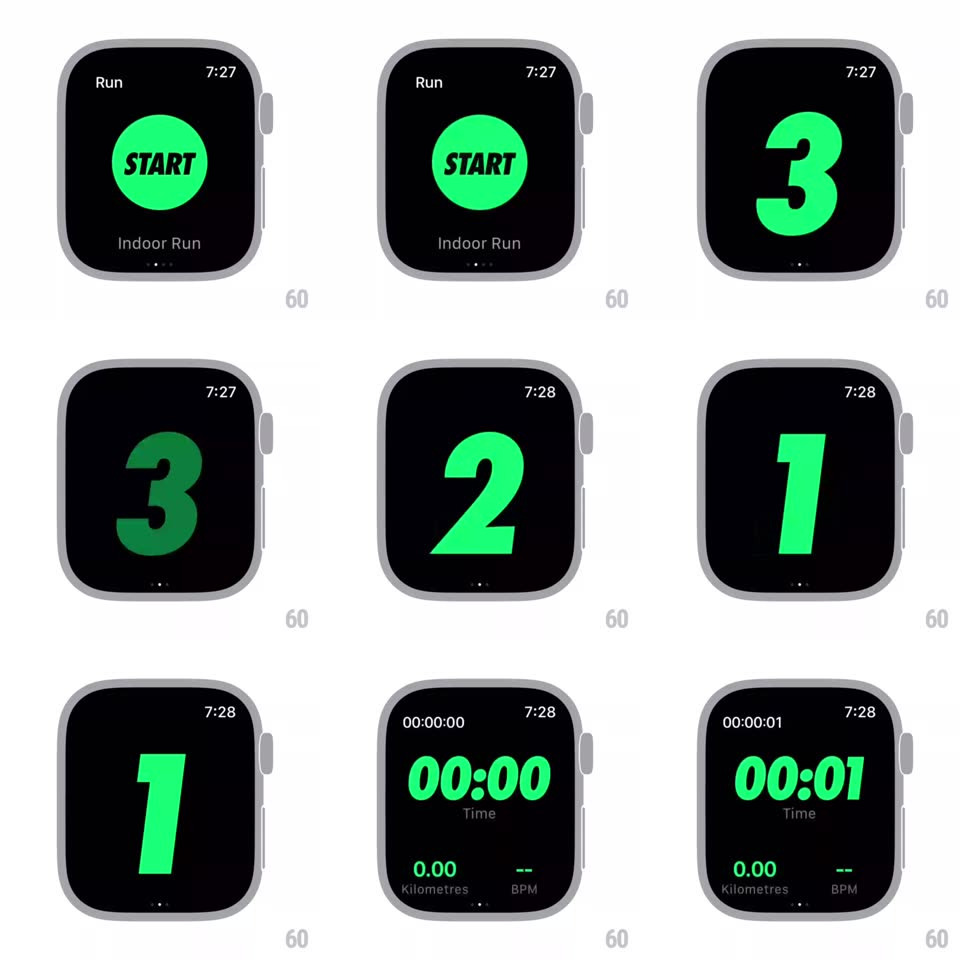

Media
Frame-by-frame

Rebuild this interaction 1:1: Nike Run Club's watch workout start - tapping the big green START circle launches a full-screen 3-2-1 countdown in giant green numerals, then cuts to the live workout dashboard (Time, Kilometres, BPM) as the timer starts ticking.

Rebuild this interaction 1:1: Nike Run Club's watch workout start - tapping the big green START circle launches a full-screen 3-2-1 countdown in giant green numerals, then cuts to the live workout dashboard (Time, Kilometres, BPM) as the timer starts ticking. ## Integration Integration: stack-agnostic spec - springs given as stiffness/damping, timed motions as duration + curve; map every value to your framework and animation library of choice. ## Scene Black watch screens: "Run" header, green START circle with "Indoor Run" below and page dots; countdown: huge green 3, 2, 1 filling the screen; dashboard: "00:00 Time / 0.00 Kilometres / -- BPM" in green, with the session clock top-left. ## Motion spec Pattern: tap-to-countdown-to-dashboard chain. - Tap START: the circle contracts (scale 0.92, 100ms) with haptic, then expands to fill the screen (scale -> 3x, 250ms ease-in) becoming the countdown background wipe. - Countdown: each numeral slams in (scale 1.4 -> 1, spring ~500/20, ~300ms), holds ~600ms, then exits by scaling down + fading (150ms); a haptic thump per numeral. - After "1": the dashboard rises into place (translateY 20px -> 0 + fade, 250ms) as the timer starts at 00:00 and begins ticking. - The dashboard digits tick with a soft per-second flash (opacity 1 -> 0.7 -> 1, 300ms); BPM shows "--" until data arrives. ## Calibration - Countdown timing is exactly 1s per numeral; the workout clock starts at the dashboard's first frame, not after its entrance. - Green (#23F0A0-ish volt) is the only color on black throughout. ## Reduced motion Numerals crossfade; dashboard fades in. ## Don't miss - The START circle's expansion is the transition - no separate cut to the countdown. - Page dots under START indicate multiple workout types; they disappear during countdown.